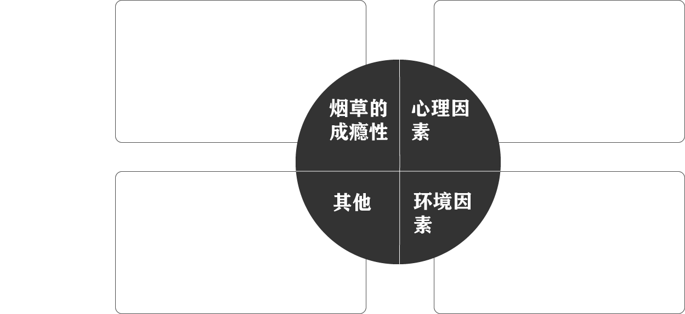
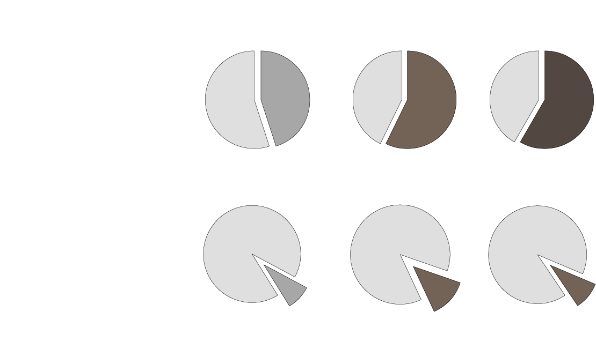
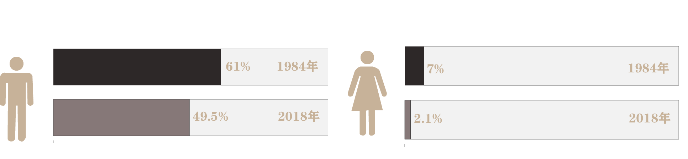

吸烟者对于烟草的成瘾性主要源 自于尼古丁的作用吸烟者一旦成 瘾，就需要通过吸烟维持大脑 中尼古丁的稳定水平。
世界无烟日是世界卫生组织在1987年创立的，现在定于每年的5月31日。世界无烟日的意义是宣扬不吸烟的理念。每年都会有一个中心主题，表示一个该年在关于烟草和不吸烟方面特别值得关注的话题。世界各地都会为响应无烟日在当日举办不同类型的宣传活动。2021年的主题是：承诺戒烟，共享无烟环境。

数据来源：国家统计局

当今社会的一些青少年往往是由于 好奇心去尝试烟草，从而一发不可 收拾。
人生遭遇不幸，比如
离婚及
月收入降低等情况而
没有得
到更好的帮助和调节
也可能
会造成一部分人吸烟成瘾，
用吸烟来缓解心中的悲伤和
焦虑。
吸烟的流行离不开环境的 影响，吸烟是社交的一部 分由于他人递烟自己不知 道如何拒绝。

数据来源：国家统计局
中国作为世界第一人口大国，也是世界上最大的卷烟生产国与消费国，生产并消费了全球约1/3的卷烟，拥有大约3.2亿的烟民，占到世界吸烟总人数的1/4，烟草还是国家和地方财税的重要经济来源。国内烟草市场容量仍可以继续扩大，主要体现在农村烟草市场蕴藏着巨大潜力。
烟草是茄科烟草属植物，别称：烟叶。一年生或有限多年生草本，全体被腺毛；根粗壮。茎高0.7-2米，基部稍木质化。叶矩圆状披针形、披针形、矩圆形或卵形，顶端渐尖，基部渐狭至茎成耳状而半抱茎。花序顶生，圆锥状，多花；花梗长5-20毫米。蒴果卵状或矩圆状，长约等于宿存萼。种子圆形或宽矩圆形，径约0.5毫米，褐色。夏秋季开花结果。

中国于1984年至2018年间开展了6次全国吸烟流行病学调查，结果显示15岁及以上人群吸烟率从1984年的33.9%下降至2018年的26.6%。其中，男性吸烟率从61%降至50.5%，女性由7%降至2.1%。据此计算，中国15岁及以上的现在吸烟者(调查时正在吸烟的人)为3.08亿，其中男性为2.96亿，女性为1180万。
今日，英国报道称，世界卫生组织、美国疾病控制中心和加拿大公共卫生协会建立了一个新的监控系统，专门收集全球烟民的对比数据。近日杂志公布了这一调查的首个结果。
报道称，与美国和英国的数据相比，在受调查的国家中，男性吸烟比例远远高于女性，最终数据让人后背一阵发凉。男女吸烟的比例分别达到48.6%和11.3%。
中国吸烟的女性成年人不到5%，但相比之下，男性的这一比例则达到45%左右，男女平均每日吸烟分别为16.6根和12.8根。
数据来源：国家统计局